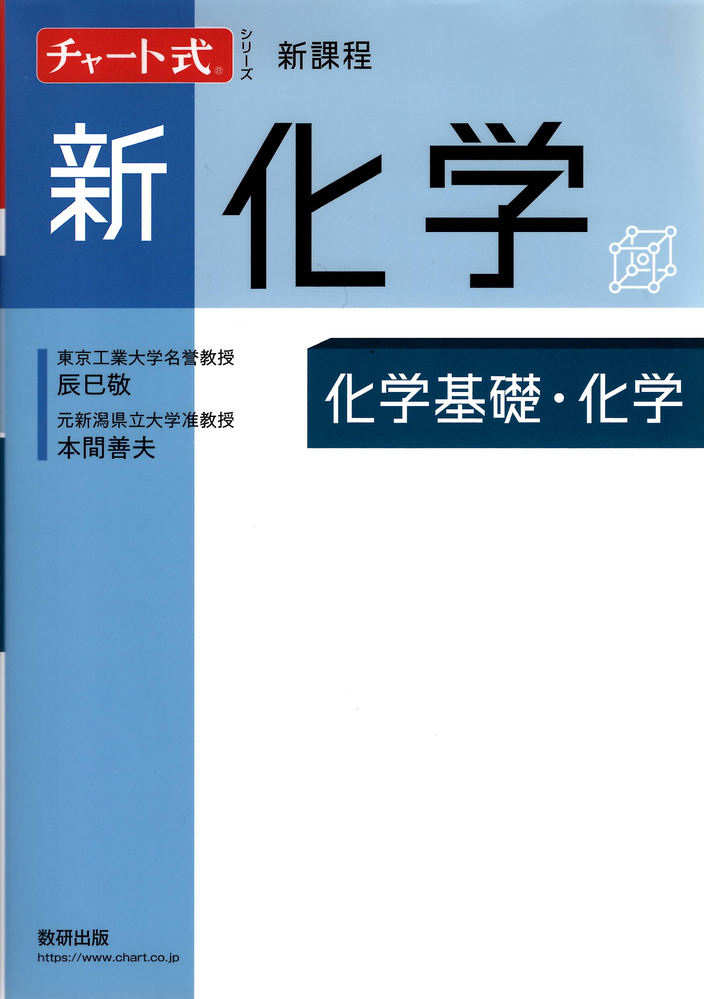

← ポータルに戻る
チャート式 新化学 (新課程)
全605ページ

序章
p.3–21
▶
0
序章 化学が拓く世界
p.11
第1編 物質の構成と化学結合
p.22–122
▶
1
物質の構成
p.22
2
物質の構成粒子
p.42
3
化学結合
p.64
4
物質量と化学反応式
p.102
第2編 物質の状態
p.126–180
▶
1
物質の三態と状態変化
p.126
2
気体
p.138
3
溶液
p.160
第3編 物質の変化
p.196–304
▶
1
化学反応とエネルギー
p.196
2
化学反応の速さとしくみ
p.214
3
化学平衡
p.228
4
酸と塩基の反応
p.242
5
酸化還元反応と電池・電気分解
p.284
第4編 無機物質
p.328–420
▶
1
非金属元素
p.328
2
金属元素(I) －典型元素－
p.360
3
金属元素(II) －遷移元素－
p.375
4
無機物質と人間生活
p.400
第5編 有機化合物
p.412–498
▶
1
有機化合物の分類と分析
p.412
2
脂肪族炭化水素
p.420
3
アルコールと関連化合物
p.434
4
芳香族化合物
p.458
5
有機化合物と人間生活
p.478
第6編 天然有機化合物と高分子化合物
p.486–544
▶
1
天然有機化合物
p.486
2
合成高分子化合物
p.510
3
高分子化合物と人間生活
p.524
特集
p.534–584
▶
0
1 問題解答のポイント
p.534
0
2 問題の考え方
p.538
付録・索引
p.550–600
▶
0
解答編
p.550
0
巻末資料
p.580
0
索引
p.585
CHART 公式・暗記事項
p.9999–9999
▶
01
同素体の覚え方
p.30
02
炎色反応の覚え方
p.33
03
アボガドロの法則
p.39
04
1H → 20Ca までの記憶法
p.43
05
電子殻の最大収容電子数 2n²
p.49
06
共有は互いに出し合い 8 となる
p.72
07
配位結合はどれ? → 区別なし
p.75
08
ひみつはグランパ CM 参上
p.81
09
電気陰性度から化学結合の様式が推定できる
p.84
10
電気陰性度で δ+ ・ δ- を判定する
p.86
11
水素は FON と握手する
p.89
12
原子量 = (同位体の相対質量 × 存在比) の総和
p.103
13
質量をモル質量で割ると物質量
p.108
14
気体 1mol は 22.4L
p.110
15
水和水、水に溶ければただの水!
p.113
16
c[mol/L] の溶液 V[L] 中にはいつでも cV[mol] の溶質
p.115
17
熱は分子を踊らせる
p.127
18
セルシウス 273 で絶対絶命!
p.128
19
重い分子は引くのも強い
p.135
20
気体といえば、いつでも pV=nRT
p.144
21
全圧は分圧の和
p.148
22
成分気体 A とあれば pA V=nA RT と書く
p.150
23
水への溶解は水和で始まる
p.161
24
似たものどうしはよく溶け合う
p.162
25
溶解度の問題は飽和溶液について考えよ
p.166
26
水和水をもつ物質の溶解度の計算
p.167
27
浸透圧よ、お前もか! ΠV=nRT
p.182
28
エンタルピーは生成物 － 反応物
p.197
29
反応エンタルピーは注目する物質 1mol あたりで考える
p.199
30
反応は活を入れないと進まない
p.223
31
触媒は汗水たらす要もなし
p.224
32
平衡は行きと帰りの速度が同じ
p.229
33
平衡は触媒で速く行っても同じこと
p.231
34
ルシャトリエの原理は鎮静剤
p.237
35
ブレンステッド・ローリーの定義
p.243
36
電離定数 Ka, Kb は、何を混ぜても変わらない
p.249
37
中和では、酸と塩基の (価数 × 物質量) が等しい
p.257
38
正塩を水に溶かすと強いほうが勝つ
p.266
39
弱い酸は出ていけ 弱い塩基も逃げていけ
p.269
40
溶解度積で沈殿生成の判定
p.278
41
酸化・還元は同時に起こる
p.285
42
酸化数 増えると酸化、減ると還元
p.287
43
化学反応式中に単体を含めば必ず酸化還元反応
p.288
44
ハロゲンの酸化力
p.294
45
リッチに借りようかな、間があるあてにすんなひどすぎる借金
p.301
46
イオン化傾向の小さいほうが析出
p.303
47
電池: イオン化傾向の大きいほうがマイナス(負極)だ
p.307
48
電池では亜鉛(負極)から電子が出ていく
p.309
49
硝酸の製法
p.349
50
Li, K, Ca, Na, Mg, Al の製法
p.364
51
両性金属の覚え方
p.371
52
錯イオンの名称
p.378
53
アンモニアは、銀・銅・亜鉛と錯イオン形成
p.389
54
鎖式炭化水素
p.414
55
二重結合・三重結合の特色
p.432
56
酸の強弱関係
p.445
57
エステルのけん化は中和と似ている
p.451
58
糖類は鎖式構造のホルミル基が還元性を示す
p.489
59
デンプンは植物の貯蔵多糖 グリコーゲンは動物の貯蔵多糖
p.493
60
タンパク質はキサントで黄色 ビウレットでバイオレット
p.504
Question Time (Q&A)
p.9999–9999
▶
01
炎色反応の色が違うのはなぜか。
p.35
02
原子核が壊れないのはなぜか。
p.43
03
カリウムの N 殻に電子が入るのはなぜか。
p.50
04
アルミニウムイオンが 3 価以外の陽イオンになりにくいのはなぜか。
p.55
05
酢酸の分子量を測定すると約 120 になるのはなぜか。
p.90
06
金属が電気を通すのはなぜか。
p.93
07
アボガドロ定数を利用することで便利なことは何か。
p.107
08
ppm とはどのような単位か。
p.113
09
イオン反応式はいつ使うのか。
p.119
10
分子の速度分布のグラフの山の高さが高温ほど低くなるのはなぜか。
p.128
11
水が一度に凍らないのはなぜか。また高温になると盛んに蒸発するのはなぜか。
p.130
12
氷が水に浮くのはなぜか。
p.131
13
水の沸点は 100℃ではないのか。
p.132
14
－273℃ より低い温度は存在しないのか。
p.142
15
圧力を加えても体積が変わらなくなるのはどのような状態のときか。
p.146
16
ヘキサンが水に溶けないのはなぜか。
p.161
17
エタノールと水を混合したとき，体積が減るのはなぜか。
p.162
18
温まった炭酸飲料の栓を抜くと泡が吹き出るのはなぜか。
p.171
19
寒冷地における海水下の魚の血液が凍らないのはなぜか。
p.180
20
浸透圧の公式はどのように導かれたのか。
p.182
21
浸透圧の公式と気体の状態方程式が似ているのはなぜか。
p.183
22
水酸化鉄(III)が親水コロイドでないのはなぜか。
p.190
23
化学平衡があるなら物理平衡もあるのか。
p.233
24
酸の水溶液で生じるのは H3O+ か H+ か。
p.244
25
二酸化ケイ素は酸性酸化物か。
p.246
26
酢酸を薄めると酸性が強くなるのか。
p.250
27
pH=5 の塩酸を 1000 倍に薄めると，pH=8 になるのか。
p.255
28
弱酸や弱塩基は少量の強塩基や強酸で中和するのか。
p.258
29
シュウ酸を標準液に用いるのはなぜか。
p.258
30
洗浄剤にある「混ぜるな危険」とはどんな意味か。
p.295
31
トタンとブリキではどちらの鉄がさびにくいか。
p.305
32
マンガン乾電池は充電できないのか。
p.310
33
陽極で，硫酸イオンでなく水が電気分解するのはなぜか。
p.319
34
反応性が激しい単体のフッ素はどのようにつくるか。
p.334
35
アンモニアソーダ法で NaHCO3 が沈殿するしくみはどのようなものか。
p.363
36
セッコウが塑像に使われるのはなぜか。
p.368
37
有機化合物の分析で，分子量はどのように求めるか。
p.418
38
有機化合物の名称はどのようにつけるか。
p.425
39
シクロアルケンは付加重合するか。
p.429
40
CH3-O-C2H5 を，メチルエチルエーテルとよんではいけないのか。
p.439
41
エステル化で，カルボン酸の OH の部分とアルコールの H の部分が取れることがわかったのはなぜか。
p.450
42
エステルの示性式はどのように書くか。
p.451
43
ベンゼンが付加反応をしにくいのはなぜか。
p.461
44
芳香族化合物の名称はどのようにつけるか。
p.462
45
アスピリンはどのように開発されたのか。
p.468
46
表面張力とはどのような力か。
p.480
47
セルロースはデンプンとどのように違うか。
p.494
48
アミノ酸はアルコールとエステルをつくるか。また酸無水物とアミド結合をつくるか。
p.499